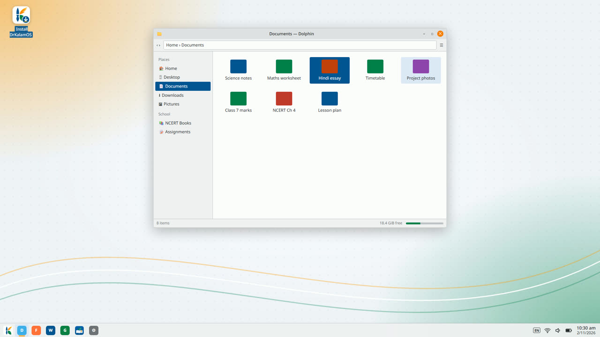
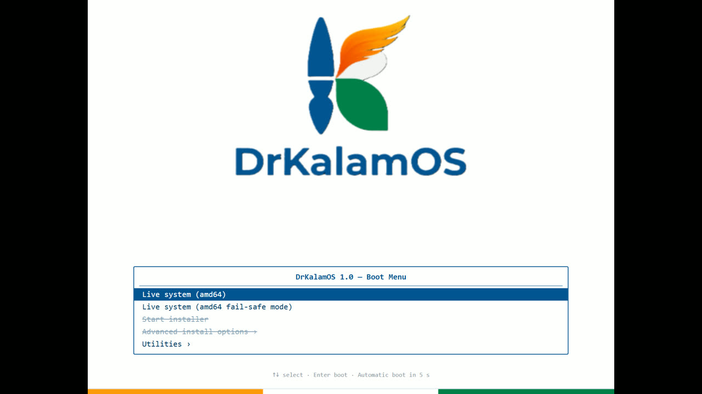
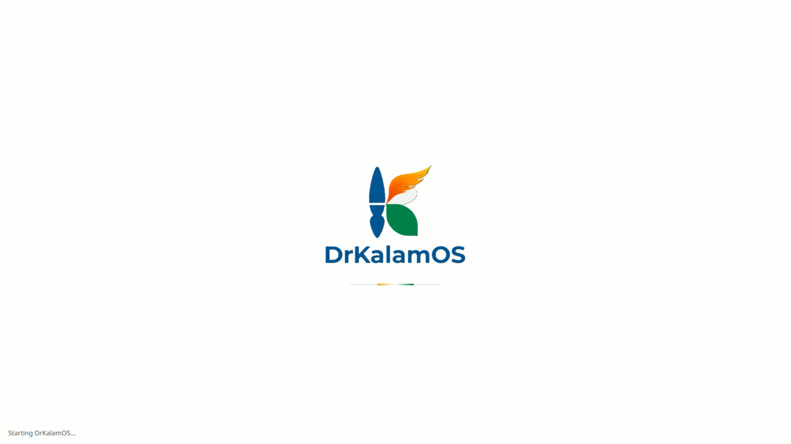
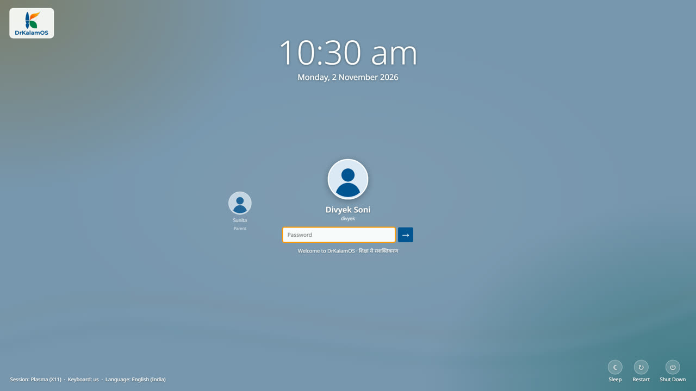
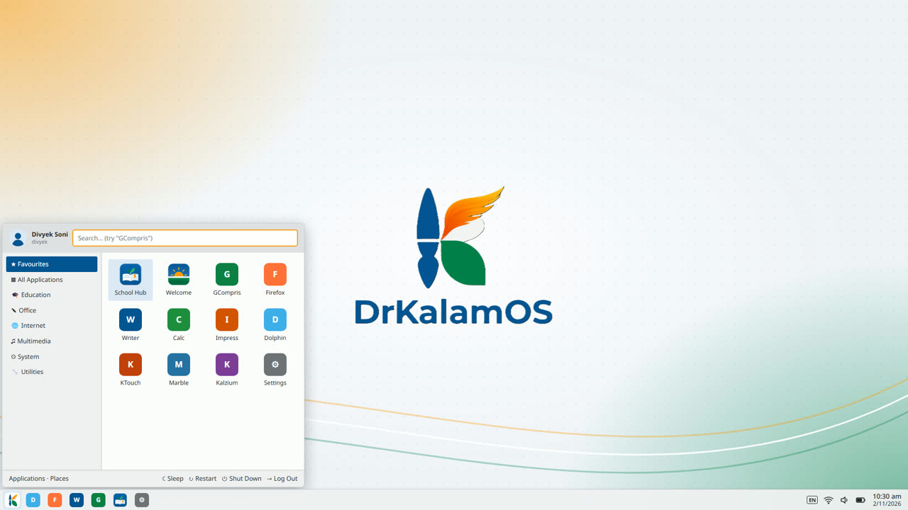
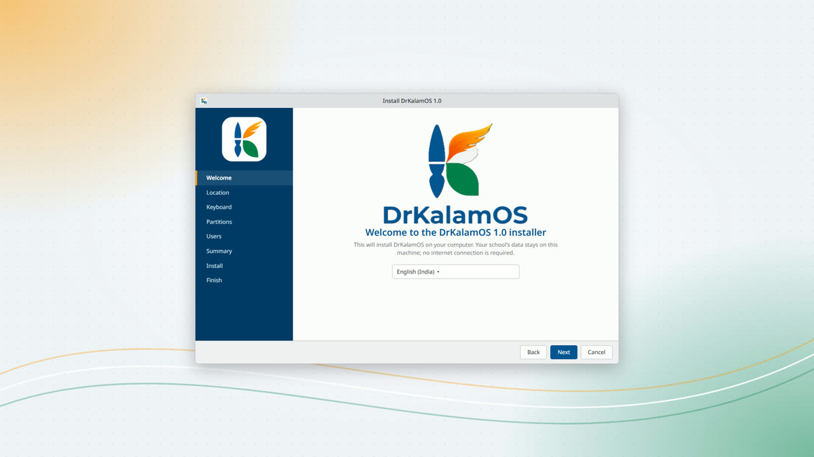
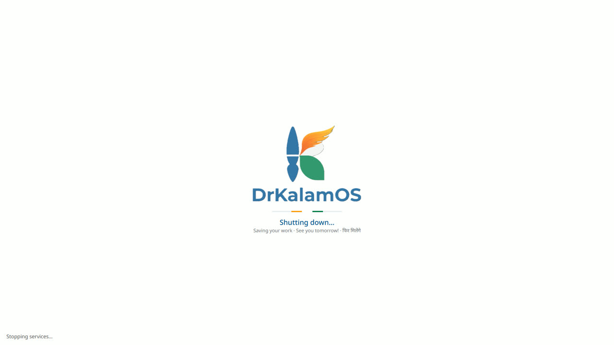
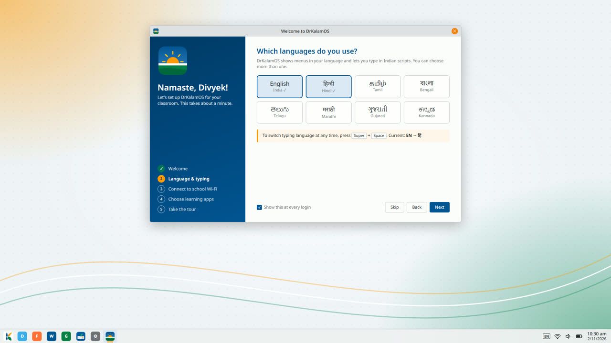
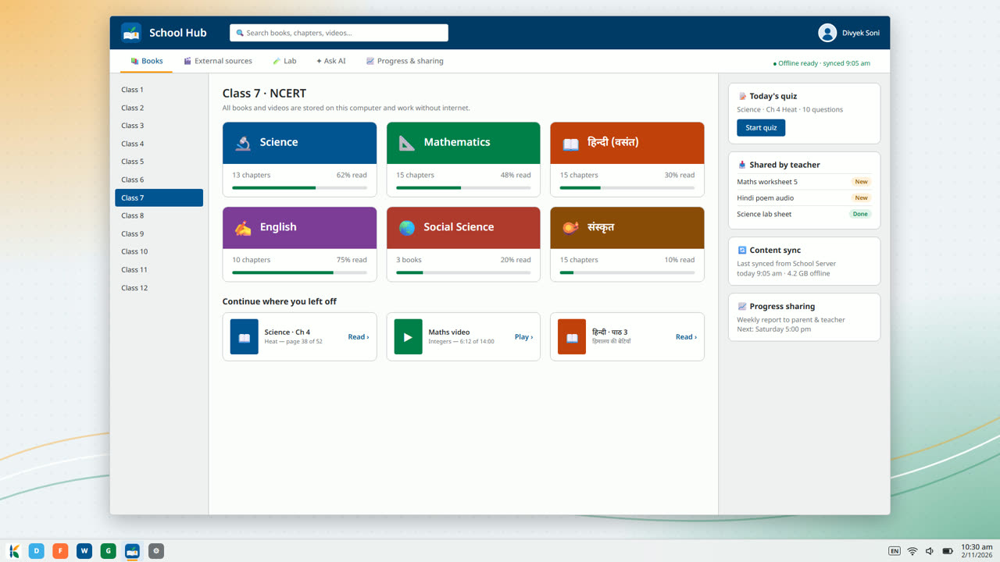

DrKalamOS is an open-source operating system based on Debian 12, with a simple KDE Plasma desktop, Indian languages and Indian time out of the box. Made for the older, low-memory PCs schools already have, and for classrooms without reliable internet.

Desktop design for version 1.0 (preview)
Everything below is in the current build unless marked otherwise. "Testing" means it is built and being checked in virtual machines.
Built only from free and open-source software (GPL v3.0). Every PC in the lab, at no cost.
IncludedCompressed memory (zram), file indexing and phone-sync services off, animations off, lighter window effects.
TestingNoto fonts for Indian scripts and the IBus input method with Hindi InScript typing. English (India) locale and Indian Standard Time by default.
TestingKDE Plasma 5.27 with a taskbar and start menu that students and teachers recognise from day one.
IncludedEverything needed for daily classroom use is on the disk. No account and no internet required.
IncludedLibreOffice for documents, sheets and slides, and Firefox ESR for the web.
IncludedBoots straight from a USB stick. Nothing on the PC changes until you choose to install.
IncludedThe Calamares graphical installer puts DrKalamOS on the hard disk in a few clicks.
TestingFirmware for common Wi-Fi and graphics chips is included. UFW firewall and OpenSSH are installed, off by default.
IncludedThe complete visual design for version 1.0 was finished and locked on 2 November 2026: 24 screens, from the boot menu to the installer. These are previews of that design; each screen is now being built into the OS.








Screenshots from the running system will replace these previews as each screen passes testing.
Built in the open. Every build is logged and every issue tracked.
Debian 12 live system built with live-build: KDE Plasma, Indian locale, firmware for real hardware.
The 24-screen visual design and brand artwork approved. Build automated with a full log. Memory tuning for 2 GB PCs and Hindi typing added.
New DrKalamOS boot menu (BIOS and EFI) with a 5-second auto-start, new boot and shutdown animation, Indian time and language on every boot entry, clearer fonts, lighter window effects. Being tested in virtual machines.
DrKalamOS login and lock screens, wallpaper and panel, branded installer, then a full test on every screen.
Welcome app, School Hub, offline NCERT/DIKSHA content, quizzes and LAN sharing.
Plans, not promises: order and dates may change.
| Milestone | What it adds |
|---|---|
| v0.1 · 1.0 release | Complete DrKalamOS look on every screen (boot, login, desktop, installer), tested on school-class hardware |
| v0.2 | Welcome app, browser start page, school app suite (GCompris, KTouch, Marble, Kalzium and more), School Hub with books, quizzes, virtual labs and progress sharing, family accounts, offline NCERT/DIKSHA content, Syncthing LAN sharing, local package mirror |
| v0.3 | Teacher dashboard, read-only system mode for labs |
| v0.4 | UPI payment links on the desktop |
| v1.0+ | Curated app store, ARM and RISC-V support, Bhashini translation, atomic updates |
DrKalamOS shows what is possible. We build custom editions for schools and institutions: your name, your logo, your colours and your software, on every PC.
Your school's name, logo and colours on the boot screen, login, desktop, wallpaper and installer.
The subjects, learning apps and offline content your teachers use, ready on first boot.
Languages, user accounts, network and lab settings prepared for your PCs.
"Learning gives creativity, creativity leads to thinking, thinking provides knowledge, and knowledge makes you great."
Dr. Kalam believed that young people with the right tools and education can transform the nation. DrKalamOS is a tribute to the People's President: a good, free computer for every student, in their own language, on the hardware their school already has.
DrKalamOS is an independent project. It is not affiliated with or endorsed by Dr. Kalam's family or any foundation in his name.
Developers, designers, translators, teachers and testers are all welcome. Try the ISO, report what breaks, or suggest what your classroom needs.